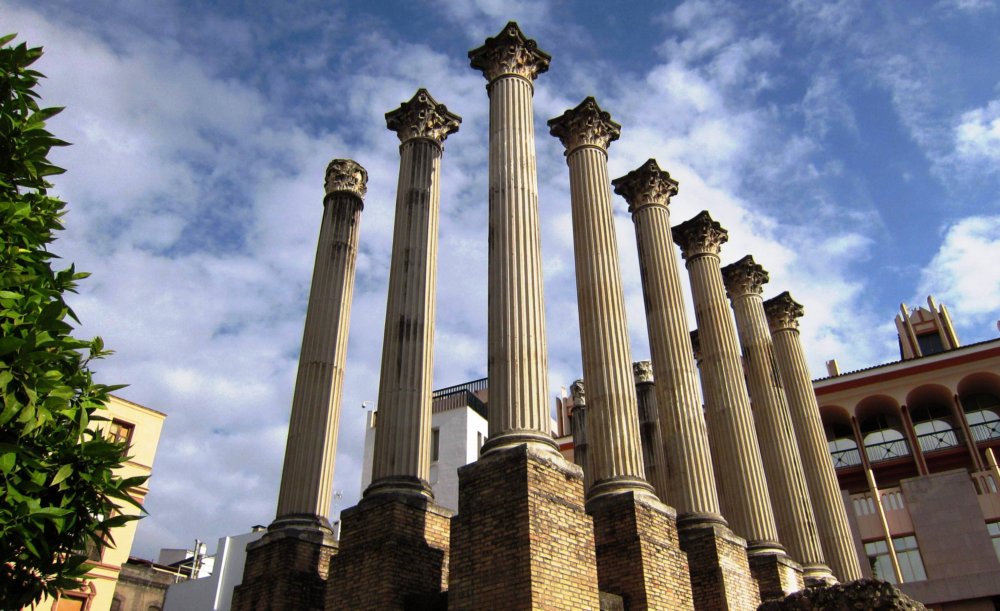

Casco Histórico: Templo romano de Claudio Marcelo
Su construcción se comenzó durante el reinado del emperador Claudio (41-54) y se terminó unos cuarenta años después, durante el reinado del emperador Domiciano (81-96), momento en el que se le dota de agua. Sufrió algunas modificaciones en el siglo II, reformas que parecen coincidir con el cambio de ubicación del foro colonial que se traslada al entorno del actual Convento de Santa Ana.
El material empleado fue casi exclusivamente mármol, desde las columnas a los muros, pasando por la cubierta y el entablamento. La calidad del mármol y la de la talla del mismo nos hablan de que su construcción fue llevada a cabo por artesanos con altísima cualificación, situando el resultado al nivel de los más bellos edificios del imperio.
El templo se situó en el límite de la Colonia Patricia, en la zona donde se ubicaba parte del lienzo oeste de la muralla. Las construcciones del interior, al igual que el lienzo de muralla, fueron destruidos para levantar el templo. El terreno fue allanado, creándose una terraza artificial donde se dispuso una plaza en medio de la cual se dispuso el templo.
La plaza estaba cerrada en tres de sus lados: el norte, este y sur (así lo indican los restos encontrados bajo el edificio situado en la esquina de Claudio Marcelo con Diario Córdoba), mientras que la oeste quedaba abierta para conectar visualmente con el circo. Algunos estudios sugieren que entre ambas zonas existía una terraza intermedia que interconectaría ambos espacios.